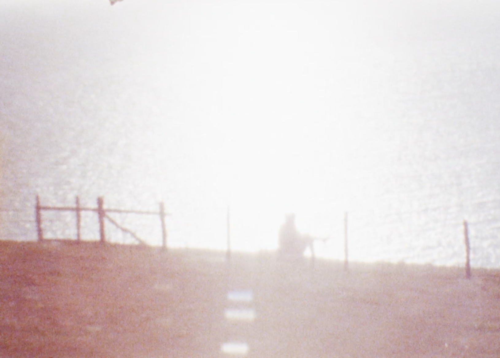
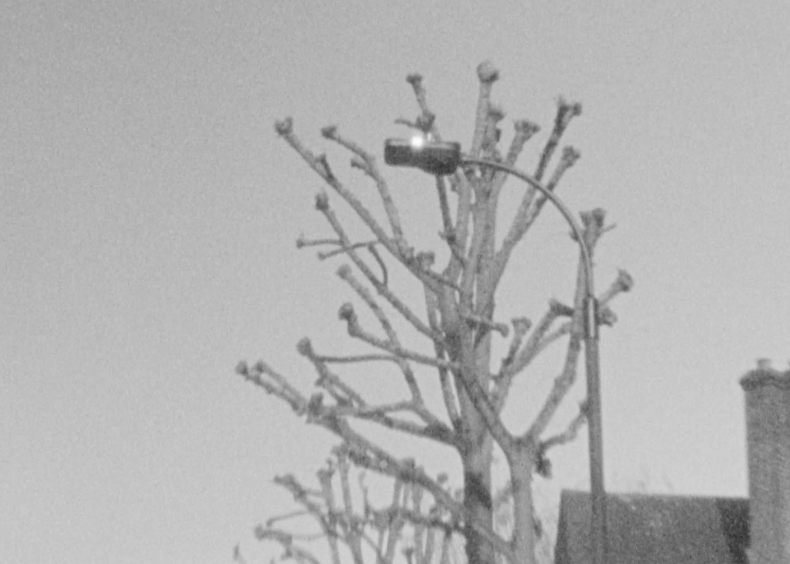
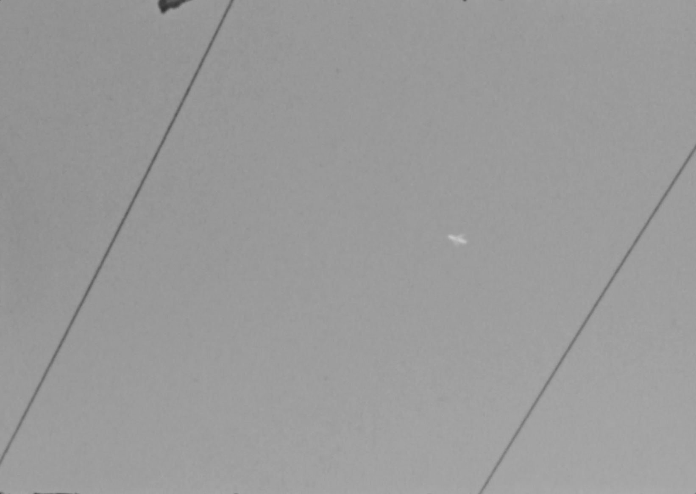

x
EMOTION LOOPS
Zilu Lin
2020
8’33’’ 8mm
Daydream - as for me, is a self digest process. As a person comes from a foreign country
experiences a different culture, this new land, I came, I left and I come again. I start a new
round of daydreaming on different things (new or familiar) in this land. The feelings of each
daze seem to be the same, but also seem a little different. These emotions are constantly
changing like cells while I’m dazing; blurry, fragile, stagnation, manic, happy. Each of the
dazed scenes carries my cyclical emotions and only belongs to my personal endless emotional
response to the reality.




